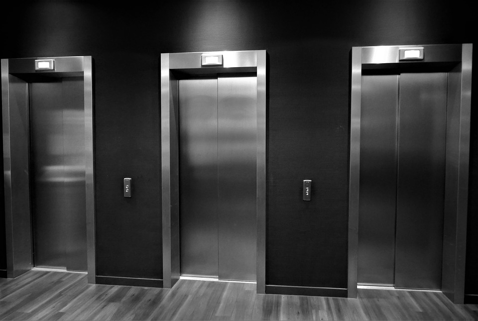

Fun on an Elevator
How Much Fun Can It Really Be?

The Web site contains examples of fun things to try while on an elevator:
-
Sit with a desk, pencil cup and a telephone in the elevator. When someone walks in, ask if they have an appointment. When there is only one other person in the elevator, tap them on the shoulder and then pretend it wasn't you. When the doors close, announce,
Don't worry, they'll open again soon.
-
Enforce a group hug.
-
Greet everyone getting on the elevator with a warm handshake and ask them to call you
Admiral.
-
Sing along with the Muzak.
2008 Elevator Goofs and Gags